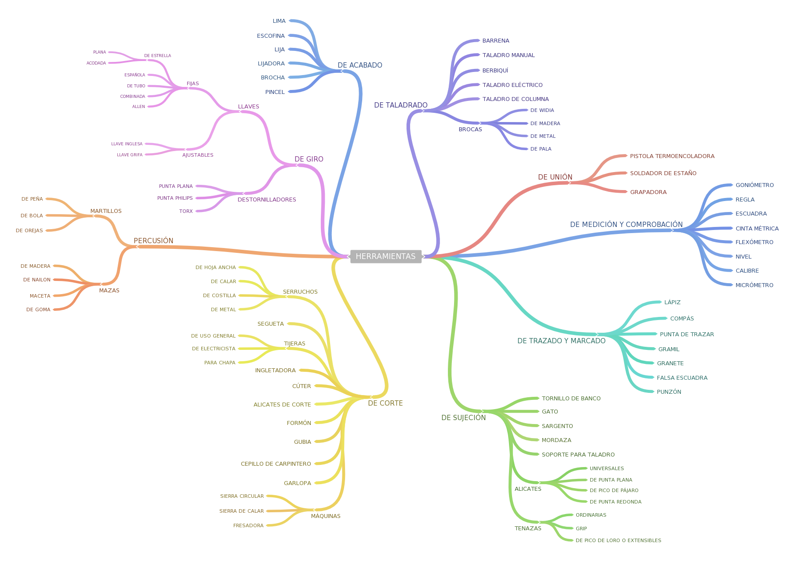

El término herramienta, en Tecnología, se emplea para referirse a utensilios resistentes (hechos de diferentes materiales, pero inicialmente se materializaban en hierro como sugiere el origen de la palabra), útiles para realizar trabajos mecánicos que requieren la aplicación de una cierta fuerza física.
Según la tarea a realizar, se pueden clasificar en grandes familias, como son las siguientes:
- Herramientas de medida y comprobación.
- Herramientas de marcado y trazado.
- Herramientas de sujeción.
- Herramientas de corte.
- Herramientas de percusión.
- Herramientas de giro.
- Herramientas de taladrado
- Herramientas de unión
- Herramientas de acabado.
Alguna herramienta, como veremos, puede clasificarse en más de una familia, aunque nosotros indicaremos la utilidad principal de la misma.
A continuación te dejo un diagrama con las herramientas que debes conocer:
